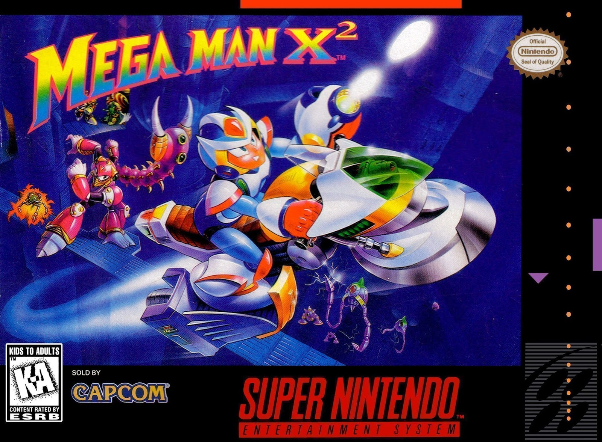

A História do Megaman X2
imagem do jogo Megaman X2
Mega Man X2 (estilizado como MEGA MAN X²), conhecido como Rockman X2 (のX2) no Japão, é um jogo desenvolvido pela Capcom para o Super Nintendo Entertainment System (SNES). O jogo foi lançado no Japão em 16 de dezembro de 1994, e nas regiões da América do Norte e PAL em 1995. É a sequência direta de Mega Man X, lançado um ano antes. Mega Man X2 se passa em um futuro próximo no qual os humanos tentam coexistir pacificamente com robôs inteligentes chamados "Reploids", com alguns dos Reploids indo "Maverick" e ameaçando a vida cotidiana. A trama segue o protagonista androide X, um "Maverick Hunter" que salvou a humanidade do malvado Sigma seis meses antes. Um trio de Mavericks que se autodenominavam "X-Hunters" surgiu, com a intenção de destruir X, atraindo-o com partes do corpo de seu companheiro Zero, que morreu no conflito com o robô da mão direita de Sigma chamado Vile.
Mega Man X2 apresenta muito dos mesmos elementos de plataforma de ação como o primeiro capítulo da série, seguindo a jogabilidade tradicional da série original Mega Man. O jogador é encarregado de completar uma série de etapas destruindo inimigos, ganhando vários power-ups, e ganhando a arma especial do chefe de cada etapa. Como o primeiro Mega Man X, este jogo permite que o jogador trace, escameia paredes e obtenha acesso a habilidades especiais através de peças opcionais de armadura. Mega Man X2 é graficamente semelhante ao seu antecessor também, mas a Capcom incluiu o chip de aprimoramento do Cx4 no cartucho para permitir alguns efeitos de wireframe 3D. A equipe de desenvolvimento foi instruída a utilizar essa tecnologia o máximo possível ao trabalhar no jogo.
A apresentação e a jogabilidade de Mega Man X2 renderam ao jogo uma recepção crítica principalmente positiva. No entanto, os revisores ficaram consternados com a falta de mudanças do Mega Man X original. O jogo já foi lançado em várias outras plataformas.
Mega Man X2 é ambientado em um ano ambíguo durante o século 22 ("21XX") no qual o mundo é povoado tanto por seres humanos quanto por seres mecânicos conhecidos como "Reploides" (androides replicantes). Os Reploides produzidos em massa são baseados em um complexo robô humanoide apelidado de Mega Man X (ou simplesmente "X") que foi descoberto pelo arqueólogo Dr. Cain em ruínas de laboratório muitos meses antes. Criados com inteligência humana e livre arbítrio, alguns reploides têm uma tendência para atividades criminosas destrutivas e são posteriormente apelidados de "Mavericks" pelo governo. [6] Uma força militar chamada "Caçadores Maverick" é formada para deter ou prevenir tal atividade. Os eventos do primeiro jogo mega man x implicam a luta do caçador X para parar Sigma, um soberano Maverick empenhado na destruição da humanidade. X prevalece em sua missão, mas ao custo da vida de seu parceiro Zero. [6]
Seis meses após o incidente, X torna-se o chefe dos Caçadores Maverick. X rastreia um "Maverick fabricado" carregando o emblema de Sigma para uma fábrica de Reploid, onde ele lança um assalto completo. [2][8] No entanto, apesar da morte aparente de Sigma e dos esforços recentes de X, a rebelião maverick continua. Três poderosos Mavericks — Serges, Agile e Violen — formam um grupo chamado "X-Hunters" e ganham o controle do Polo Norte. No tempo entre a morte de Sigma e a súbita revolta do trio, Serges recolheu as partes do corpo do falecido Zero. [9] Após a missão de fábrica, X é designado para buscar e exterminar oito líderes Maverick em um grande continente diretamente ao sul do Polo Norte. Os X-Hunters entram em contato com os Caçadores Maverick logo depois e os provocam com o corpo de Zero. Os X-Hunters flutuam entre os oito locais de Maverick e tentam atrair X para fora, cada um prometendo ao protagonista um pedaço de Zero se ele puder derrotá-los. [10]
A história se desvia ligeiramente dependendo se o jogador coleta ou não todas as três partes de Zero antes de ir para a fortificação X-Hunter no Polo Norte. Se o jogador reunir todas as peças, o Dr.